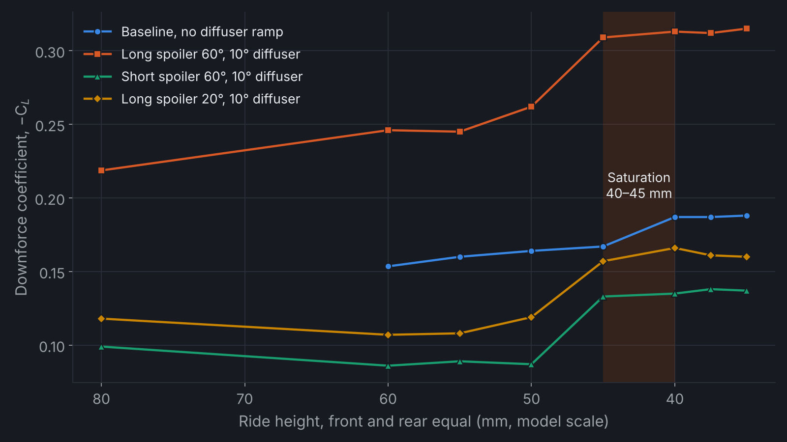

MSc Automotive Aerodynamics · Cranfield University · 2026 · Group of five
Wind Tunnel Testing
Pressure-tap data on a reference car model, corrected and checked two ways, and a ride-height sweep of a 35% DrivAer model on a moving ground.

- 25Pressure-tap channels corrected after the reference-pressure correction went into LabVIEW with the wrong sign
- 2.3%Largest difference between two integration methods for the axial load coefficient
- 35%Scale of the DrivAer model tested on the moving ground
- 40–45 mmRide height where the downforce gain from lowering the car levelled off
The assignment
A five-person group assignment in the Automotive Aerodynamics module, Cranfield MSc, February 2026. Each experiment had a named owner. I did the pressure-distribution experiment on my own, and the DrivAer moving-ground experiment with one coursemate.
Pressure distribution on a reference car model
A bluff-body reference car with 25 pressure taps in a 5 × 5 grid on its base, tested at 32 m/s across a yaw sweep of 0, ±1, ±3, ±5, ±10, ±15 and ±20°, with a baseline and a 10° underbody diffuser.
- Fixing the data: the reference-pressure correction had been entered into LabVIEW before the run as −0.1 instead of +0.1, so every channel carried the wrong offset. I derived the correction, p − p∞ = (p − p2) − 2(0.1)q∞, and applied it to all 25 channels.
- Checking the integration: I integrated the base pressures into an axial load coefficient with two methods in MATLAB. They agreed within 2.3% at every yaw angle.
- Result: the axial coefficient rose steadily with yaw, from 0.241 at 0° to 0.363 at ±20°. The diffuser raised it compared with the baseline. Published studies show lower drag with a diffuser, and with taps only on the base this test could not resolve why, so I reported the disagreement rather than forcing a fit.
| Yaw (°) | Rectangular rule | Midpoint rule | Difference |
|---|---|---|---|
| 0 | 0.241 | 0.245 | +1.66% |
| ±1 | 0.244 | 0.241 | −1.23% |
| ±3 | 0.253 | 0.248 | −1.98% |
| ±5 | 0.263 | 0.257 | −2.28% |
| ±10 | 0.301 | 0.295 | −1.99% |
| ±15 | 0.336 | 0.331 | −1.49% |
| ±20 | 0.363 | 0.359 | −1.10% |
DrivAer model on a moving ground
A 35% scale DrivAer fastback in Cranfield's 8 × 6 ft closed-return tunnel, with a moving belt, boundary-layer suction and a six-component balance, run at up to 35 m/s. We tested combinations of spoiler length, spoiler angle and diffuser ramp angle, and swept the ride height from 80 mm down to 35 mm at a fixed pitch. I analysed the ride-height sweep.

Ride height had the biggest effect on both lift and drag. Lowering the car squeezed the underbody flow and added downforce, but the gain levelled off at around 40–45 mm in every set-up. A longer diffuser is one way to push that point lower. Drag kept falling slightly as the car came down, with no clear levelling-off.
Why it matters
Both results depend on trusting the measurement. The first needed the data corrected before it meant anything; the second relies on hardware that sets and holds ride height accurately. That is the same habit I bring to simulation work: check the input before believing the output.
Tools: MATLAB, Excel, Cranfield wind tunnels
← All projects